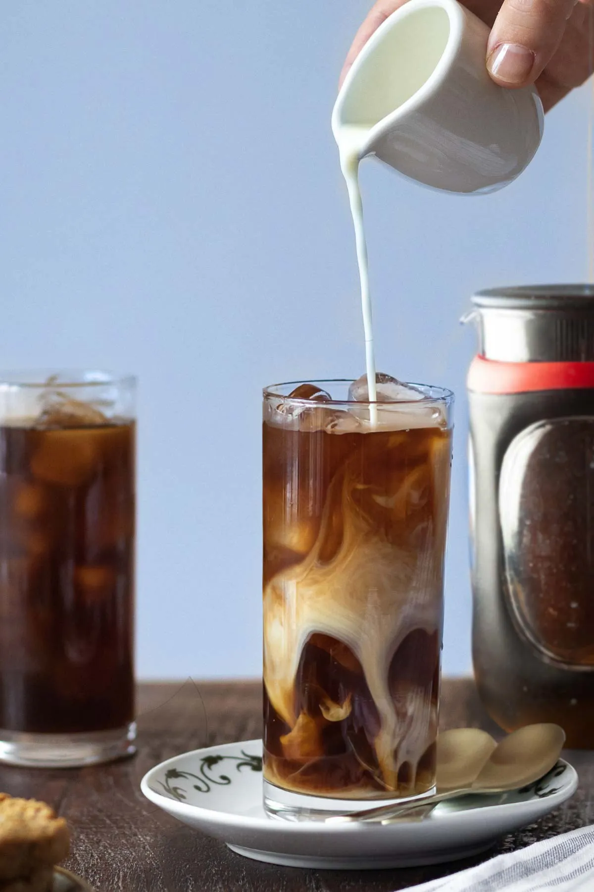
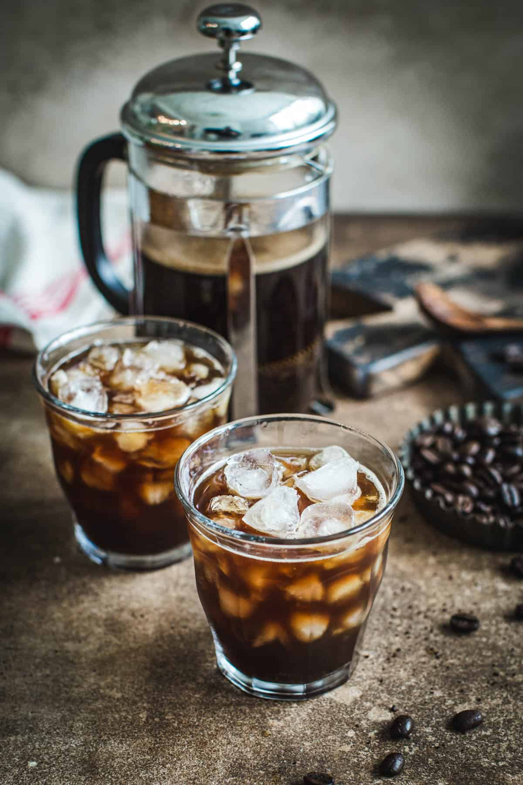
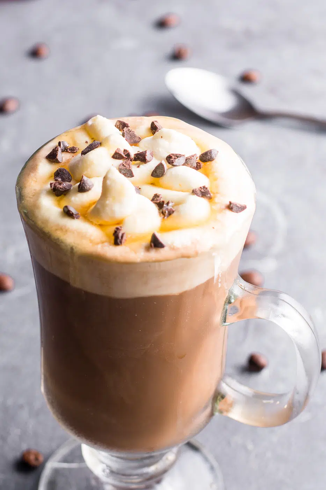
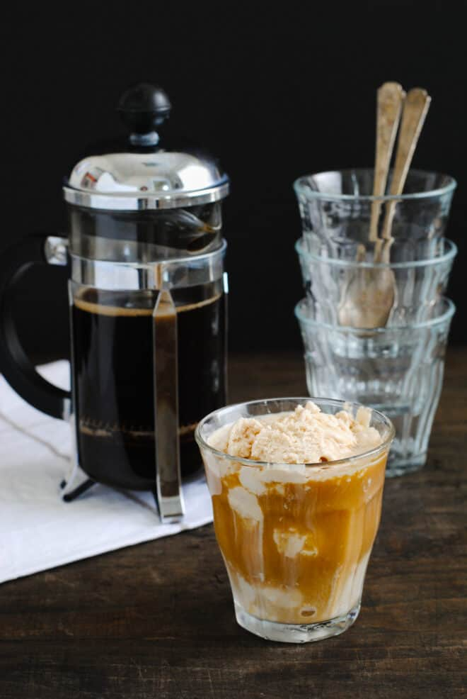

French Press Selection

Classic French Press Coffee
Tasting Notes: Full-bodied, rich, robust flavor with natural oils
How to make: Use coarse grind, steep in hot water for 4 minutes, then press the plunger.
$4.50
French Press Latte
Tasting Notes: Creamy, mellow, smooth coffee flavor
How to make: Brew strong coffee in French press, then add hot or steamed milk (1:1 ratio).
$4.50

French Press Cold Brew
Tasting Notes: Smooth, mellow, low-acid
How to make: Add coarse grounds and cold water. Steep for 12–18 hours in the fridge. Press and serve over ice.
$4.50

French Press Iced Coffee
Tasting Notes: Refreshing, bold, slightly diluted
How to make: Brew hot coffee, cool it, and pour over ice. Optionally add sugar or milk.
$4.50

French Press Mocha
Tasting Notes: Chocolatey, rich, slightly sweet
How to make: Brew coffee, mix in cocoa powder or syrup, and top with milk or cream.
$4.50

French Press Affogato
Tasting Notes: Sweet, bold, dessert-like
How to make: Brew strong coffee, pour hot over a scoop of vanilla ice cream. Serve immediately.
$4.50